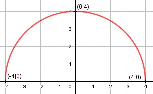

Aufgabe 125 f(x) = f(x) = (16 - x²)0,5 Kettenregel: f'(x) = 0,5 * (-2x) * (16 - x²)-0,5 f'(x) = -x * (16 - x²)-0,5 Produktregel zweite Ableitung: u = -x, u' = -1 v = (16 - x²)-0,5 Kettenregel: v' = -0,5 * (- 2x) * (16 - x²)-1,5 v' = x * (16 - x²)-1,5 f''(x) = -1*(16 - x²)-0,5 + x*(16 - x²)-1,5*(-x) f''(x) = -(16 - x²)-0,5 - x² * (16 - x²)-1,5 -1 x² f''(x) = -------------- - -------------- (16 - x²)0,5 (16 - x²)1,5 -1 x² f''(x) = -------------- * (1 + ---------) (16 - x²)0,5 16 - x² -1 16 - x² + x² f''(x) = --------------* (--------------) (16 - x²)0,5 (16 - x²) -16 f''(x) = ------------- (16 - x²)1,5 Zur Beurteilung, ob f'''(x) ≠ 0: (Begründung siehe Aufgabe 105) u = -16, u' = 0 u' 0 f'''(x) = --- = -------------- ≠ 0 v (16 - x²)1,5 für alle x ≠ 4, -4 16 - x² muss ≥ 0 sein, wegen Quadratwurzel. 16 - x² ≥ 0 |+x² 16 ≥ x² |ⱱ |x| ≤ 4 --> x ≥ -4 und x ≤ 4 Definitionsbereich: -4 ≤ x ≤ 4 Wertebereich: f(x) wird dann am größten, wenn x = 0 (Extrempunkt) f(x) = ≥ 0 f(0) = = 4 --> 0 ≤ f(x) ≤ 4 Symmetrie zur y-Achse bzw. zum Punkt (0|0): f(-x) = = = f(x) --> Achsensymmetrie -f(-x) = - ≠ f(x) --> keine Punktsymmetrie Nullstellen: f(x) = 0 = 0 |² 16 - x² = 0 |+x² x² = 16 x1,2 = ± 4 x1 = 4, x2 = -4 N1(4|0), N2(-4|0) Schnittpunkt mit der y-Achse: f(0) = = 4 Sy(0|4) Extrempunkte: f'(x) = 0 -x ------------- = 0 |*(16 -x²)0,5 (16 - x²)0,5 -x = 0 | *(-1) x = 0, f(x) = 4 16 f''(0) = - ------------- < 0 --> Hochpunkt(0|4) (16 - x²)1,5 Wendepunkte: f''(x) = 0 -16 -------------- = 0 |*(16 - x²)1,5 (16 - x²)1,5 -16 = 0 Widerspruch --> keine Wendepunkte Graph:
